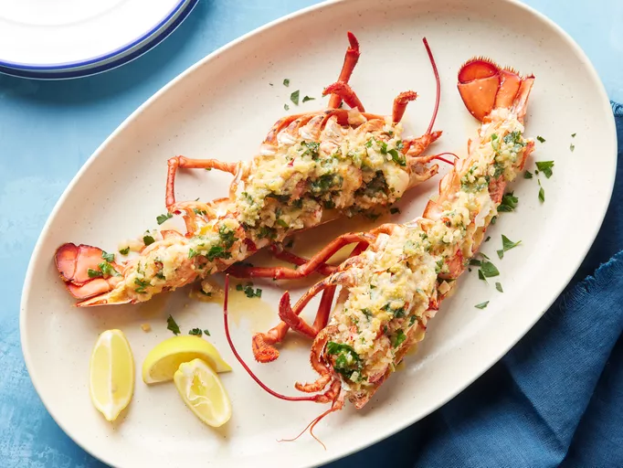

Home
Lobster Thermidor

Description
Lobster Thermidor is a French dish of lobster meat cooked in a rich wine sauce, stuffed back into a lobster shell, and browned. The sauce is often a mixture of egg yolks and brandy (such as Cognac), served with an oven-browned cheese crust, typically Gruyère. The sauce originally contained mustard (typically powdered mustard).
Lobster Thermidor is surprisingly simple to make at home for a stunning meal for two. Lobster shells are stuffed with cooked lobster in a creamy white wine sauce, topped with Parmesan cheese, and broiled until golden.
Ingredients
- 1 medium (1 1⁄2 pound) cooked lobster
- 2 tablespoons butter
- 1 shallot, finely chopped
- 1 3⁄8 cups fresh fish stock
- 1⁄4 cup white wine
- 1⁄4 cup heavy cream
- 1⁄2 teaspoon hot English mustarde
- 2 tablespoons chopped fresh parsley
- 1 tablespoon fresh lemon juice
- Salt and freshly ground black pepper to taste
- 1⁄4 cup freshly grated Parmesan cheese
Steps
- Cut lobster in half lengthwise, and remove any meat from the claws, tail, and head. Cut meat into pieces and place back into the shells.
- Melt butter in a large skillet over medium heat. Add shallot; cook and stir until tender.
- Mix in fish stock, white wine, and cream. Bring to a boil, and cook until reduced by half. Mix in parsley, lemon juice, mustard, salt, and pepper.
- Preheat your oven's broiler. Place stuffed lobster halves on a broiling pan or baking sheet. Spoon sauce over the meat and sprinkle with Parmesan cheese.
- Broil in the preheated oven until just golden brown, 3 to 4 minutes.
- Serve immediately and enjoy!